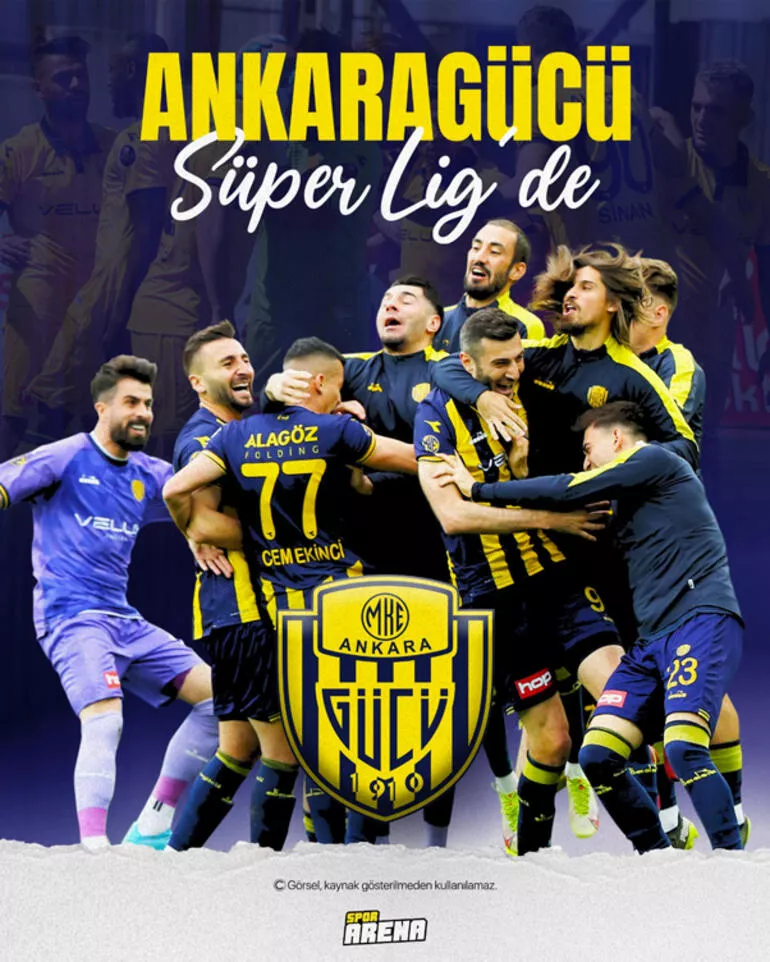
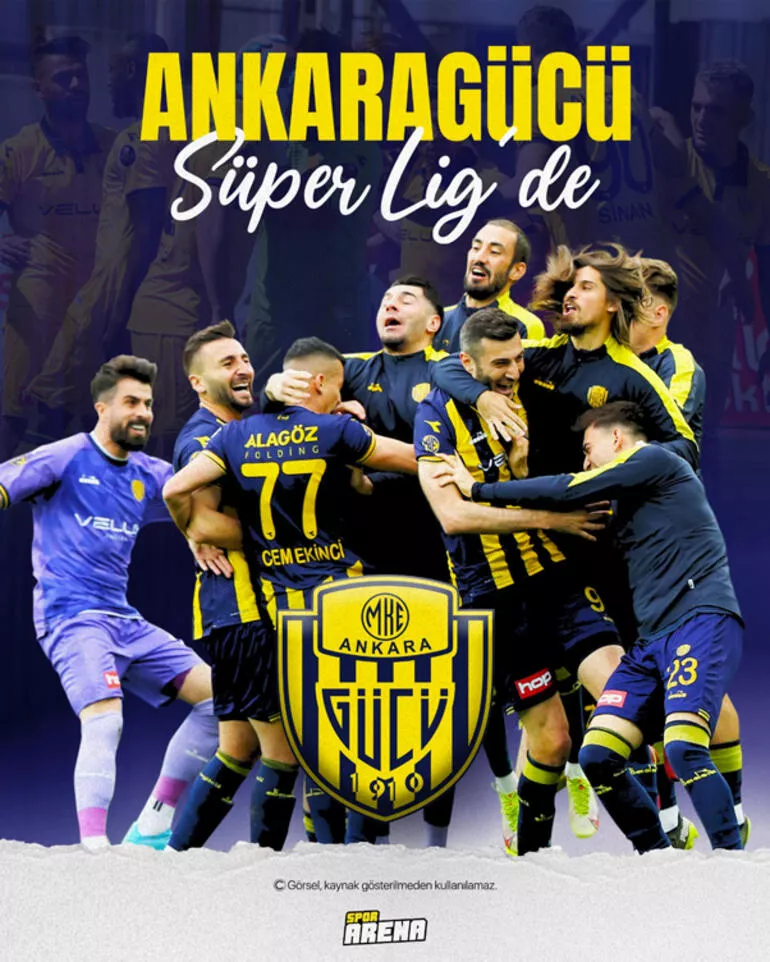
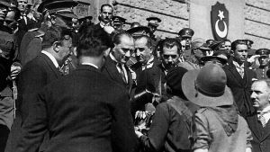
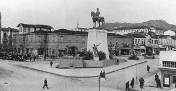
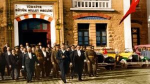

Gezilecek yerler hakkında bilgi için resme tıklayın
Gezilecek yerler hakkında bilgi için resme tıklayın
Gezilecek yerler hakkında bilgi için resme tıklayın
Gezilecek yerler hakkında bilgi için resme tıklayın
 =>=>=>Lezzetler hakkında bilgi için resme tıklayın
=>=>=>Lezzetler hakkında bilgi için resme tıklayın
ANKARA TARİHi
Ankara’nın geçmişi çok eski devirlere dayanır. Nitekim Bağlum, Çubuk Barajı ve Maltepe'deki kazılarda eski çağlara ait eşyalar bulunmuştur. Alatlıbel ve Etiyokuşu, eski çağlardan kalma köylerdir. Ankara’nın bilinen tarihi Hititlere dayanır. Hitit İmparatorluğu Anadolu’ya hakim olunca, Ankara’ya 160 km uzaklıktaki Hattuşaş’ı (Bogazköy) başkent yaptı; bu sebepten Ankara Kalesinde Hititlere ait izler vardır.
Hitit İmparatorluğunun yıkılışından sonra M.Ö. sekizinci asırda Anadolu'ya hakim olan Frigyalılar, Ankara’ya sahip olmuşlardır. Frigyalılar şehirlerini yığma topraklarla yapılmış tepeler (höyükler) üzerine kurmuşlardır. Orman Çiftliği civarında 20’ye yakın yığma tepede Frigyalılara ait mezar ve eşyalar bulunmuştur. Frig kralı Gordius’un oğlu Midas, Ankara’yı genişletmiştir. Ankara, Avrupa-Asya arasında göç, ticaret ve fetih yolları üzerinde olduğundan, Lidyalılar, Persler, Galatlar, Bergamalılar, Makedonya kralı Büyük İskender’in ve Romalıların istilasına uğramıştır. Roma İmparatorluğu (M.S. 189-395) idaresi altında iken Roma’nın bölünmesi üzerine 395-684 arasında Doğu Roma (Bizans) idaresinde kalmıştır. 684 senesinde İslam ordusu Ankara'yı ele geçirmiştir. Ankara kalesinde pekçok Eshab-ı kiramın kabirleri vardır (yerleri belli değildir). Abbasiler devrinde, Halife Harun Reşid zamanında Ankara bütünüyle feth edilmiştir. Bundan sonra Ankara zaman zaman müslümanlarla Bizanslılar arasında el değiştirmiştir.
1071 Malazgirt Meydan Savaşında Alparslan Bizans ordularını yenip bozguna uğratınca, Selçuklu Türkleri hızla Anadolu’yu feth ettiler. 1073’de Ankara’yı ele geçirdiler. Bizanslılar, Ankara’yı geri almak için iki defa saldırdılarsa da hezimete uğradılar. İlhanlılar, Selçuklu ülkesini istila edince, Ankara 40 sene İlhanlıların elinde kaldı. 1210 Moğol istilasında Sultan İkinci Gıyaseddin Keyhüsrev, Ankara kalesine sığındı. 1341’de Anadolu’da çıkan karışıklıklarla “Ahi Teşkilatı” Ankara’nın siyasi iktidarını ele geçirdi. Huzur ve güven sağlandı. 1354’te Ahiler kendi istekleri ile Ankara’yı Orhan Gazi zamanında oğlu ve Rumeli fatihi Süleyman Paşaya devrettiler. Böylece Ankara 1354’te Osmanlı Devletinin toprağı oldu.
İstiklal Savaşı’nda Milli mücadelenin merkezi, karargahı, 23 Nisan 1920’de açılan Türkiye Büyük Millet Meclisinin çalışma yeri, 13 Ekim 1923’de de yeni cumhuriyetin başkenti olmuştur.


